Chapter 3 NHANES: Initial Exploring
We’ll start by visualizing some data from the US National Health and Nutrition Examination Survey, or NHANES. We’ll display R code as we go, but we’ll return to all of the key coding ideas involved later in the Notes.
3.1 The NHANES data: Collecting a Sample
To begin, we’ll gather a random sample of 1,000 subjects participating in NHANES, and then identify several variables of interest about those subjects1. Some of the motivation for this example came from a Figure in Baumer, Kaplan, and Horton (2017).
# library(NHANES) # already loaded NHANES package/library of functions, data
set.seed(431001)
# use set.seed to ensure that we all get the same random sample
# of 1,000 NHANES subjects in our nh_data collection
nh_dat1 <- sample_n(NHANES, size = 1000) %>%
select(ID, Gender, Age, Height)
nh_dat1# A tibble: 1,000 x 4
ID Gender Age Height
<int> <fct> <int> <dbl>
1 69638 female 5 106.
2 70782 male 64 176.
3 52408 female 54 162.
4 59031 female 15 155.
5 64530 male 53 185.
6 71040 male 63 169.
7 55186 female 30 168.
8 60211 male 5 103.
9 55730 male 66 161.
10 68229 female 36 170.
# ... with 990 more rowsWe have 1000 rows (observations) and 4 columns (variables) that describe the subjects listed in the rows.
3.2 Age and Height
Suppose we want to visualize the relationship of Height and Age in our 1,000 NHANES observations. The best choice is likely to be a scatterplot.
Warning: Removed 37 rows containing missing values (geom_point).
We note several interesting results here.
- As a warning, R tells us that it has “Removed 37 rows containing missing values (geom_point).” Only 963 subjects plotted here, because the remaining 37 people have missing (NA) values for either Height, Age or both.
- Unsurprisingly, the measured Heights of subjects grow from Age 0 to Age 20 or so, and we see that a typical Height increases rapidly across these Ages. The middle of the distribution at later Ages is pretty consistent at at a Height somewhere between 150 and 175. The units aren’t specified, but we expect they must be centimeters. The Ages are clearly reported in Years.
- No Age is reported over 80, and it appears that there is a large cluster of Ages at 80. This may be due to a requirement that Ages 80 and above be reported at 80 so as to help mask the identity of those individuals.2
As in this case, we’re going to build most of our visualizations using tools from the ggplot2 package, which is part of the tidyverse series of packages. You’ll see similar coding structures throughout this Chapter, most of which are covered as well in Chapter 3 of Grolemund and Wickham (2019).
3.3 Subset of Subjects with Known Age and Height
Before we move on, let’s manipulate the data set a bit, to focus on only those subjects who have complete data on both Age and Height. This will help us avoid that warning message.
ID Gender Age Height
Min. :51624 female:484 Min. : 2.00 Min. : 85.0
1st Qu.:57034 male :479 1st Qu.:19.00 1st Qu.:156.2
Median :62056 Median :37.00 Median :165.0
Mean :61967 Mean :38.29 Mean :162.3
3rd Qu.:67269 3rd Qu.:56.00 3rd Qu.:174.5
Max. :71875 Max. :80.00 Max. :195.9 Note that the units and explanations for these variables are contained in the NHANES help file, available via typing ?NHANES in the Console of R Studio, or by typing NHANES into the Search bar in R Studio’s Help window.
3.3.1 The Distinction between Gender and Sex
The Gender variable here is a mistake. These data refer to the biological status of these subjects, which is their Sex, and not the social construct of Gender which can be quite different. In our effort to avoid further confusion, we’ll rename the variable Gender to instead more accurately describe what is actually measured here.
To do this, we can use this approach…
nh_dat2 <- nh_dat1 %>%
rename(Sex = Gender) %>%
filter(complete.cases(Age, Height))
summary(nh_dat2) ID Sex Age Height
Min. :51624 female:484 Min. : 2.00 Min. : 85.0
1st Qu.:57034 male :479 1st Qu.:19.00 1st Qu.:156.2
Median :62056 Median :37.00 Median :165.0
Mean :61967 Mean :38.29 Mean :162.3
3rd Qu.:67269 3rd Qu.:56.00 3rd Qu.:174.5
Max. :71875 Max. :80.00 Max. :195.9 That’s better. How many observations do we have now? We could use dim to find out the number of rows and columns in this new data set.
[1] 963 4Or, we could simply list the data set and read off the result.
# A tibble: 963 x 4
ID Sex Age Height
<int> <fct> <int> <dbl>
1 69638 female 5 106.
2 70782 male 64 176.
3 52408 female 54 162.
4 59031 female 15 155.
5 64530 male 53 185.
6 71040 male 63 169.
7 55186 female 30 168.
8 60211 male 5 103.
9 55730 male 66 161.
10 68229 female 36 170.
# ... with 953 more rows3.4 Age-Height and Sex?
Let’s add Sex to the plot using color, and also adjust the y axis label to incorporate the units of measurement.
ggplot(data = nh_dat2, aes(x = Age, y = Height, color = Sex)) +
geom_point() +
labs(title = "Height-Age Relationship in NHANES sample",
y = "Height in cm.")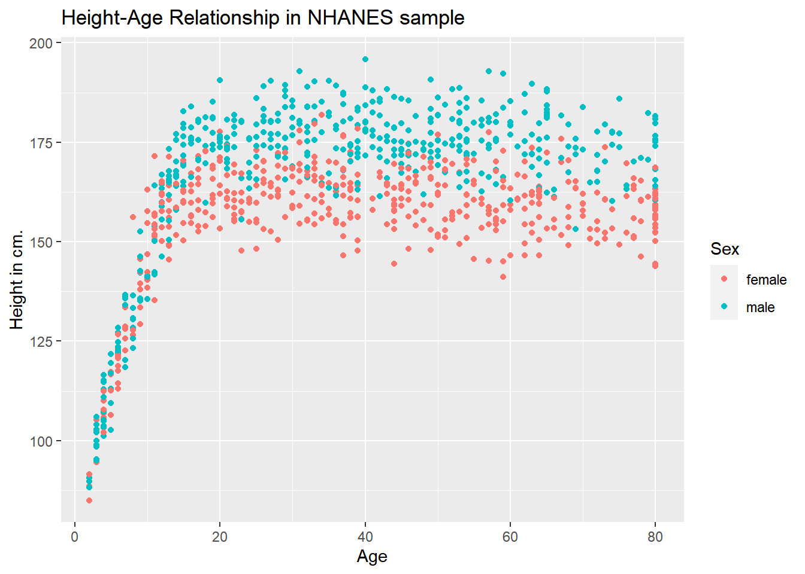
3.4.1 Can we show the Female and Male relationships in separate panels?
Sure.
ggplot(data = nh_dat2, aes(x = Age, y = Height, color = Sex)) +
geom_point() +
labs(title = "Height-Age Relationship in NHANES sample",
y = "Height in cm.") +
facet_wrap(~ Sex)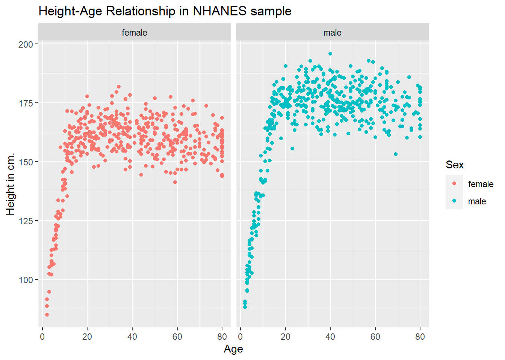
3.4.2 Can we add a smooth curve to show the relationship in each plot?
Yep, and let’s change the theme of the graph to remove the gray background, too.
ggplot(data = nh_dat2, aes(x = Age, y = Height, color = Sex)) +
geom_point() +
geom_smooth(method = "loess") +
labs(title = "Height-Age Relationship in NHANES sample",
y = "Height in cm.") +
theme_bw() +
facet_wrap(~ Sex)`geom_smooth()` using formula 'y ~ x'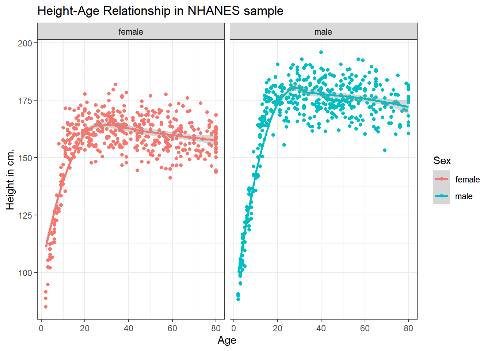
3.4.3 What if we want to assume straight line relationships?
We could look at a linear model in the plot. Does this make sense here?
ggplot(data = nh_dat2, aes(x = Age, y = Height, color = Sex)) +
geom_point() +
geom_smooth(method = "lm") +
labs(title = "Height-Age Relationship in NHANES sample",
y = "Height in cm.") +
theme_bw() +
facet_wrap(~ Sex)`geom_smooth()` using formula 'y ~ x'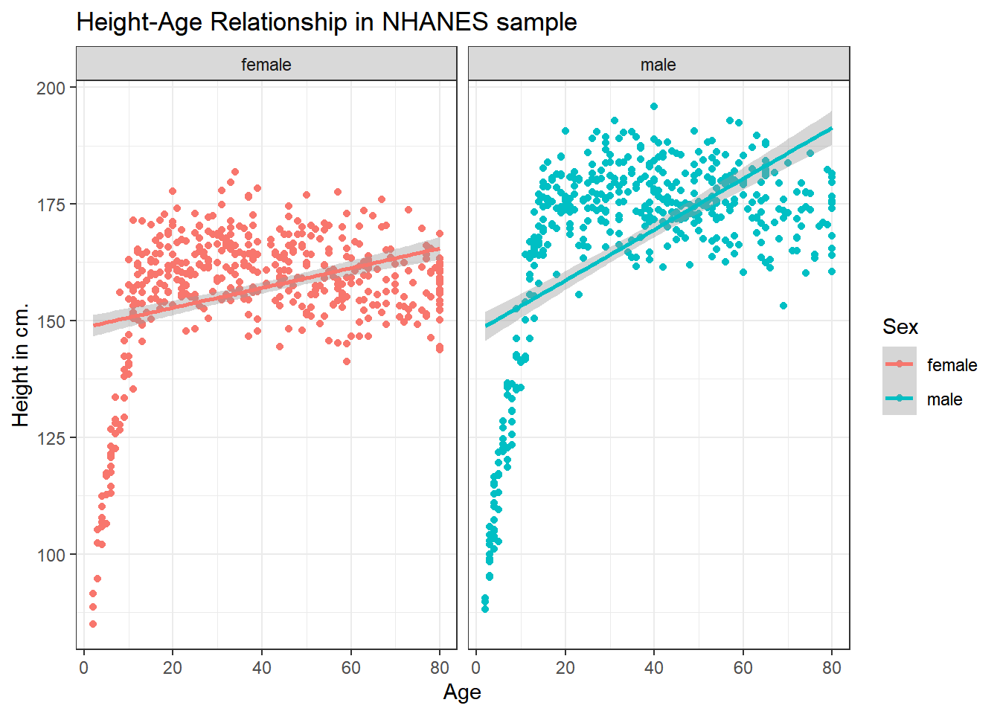
3.5 Creating A New Subset: Ages 21-79
Suppose we wanted to look only at those observations (subjects) whose Age is at least 21 and at most 79. Suppose also that we want to look at some of the additional variables available in NHANES. To start, we’ll do the following:
- Set the same seed for random sampling that we used earlier, so that we start with the original sample of 1000 people we built earlier. Draw that same sample of 1,000 people.
- Filter the sample to only those people whose age is more than 20 and less than 80 years.
- Select the variables we will use in the rest of this chapter:
Ageas we’ve seen before, in years.Heightas we’ve seen before, in centimeters.Genderwhich we’ll rename asSexagain.Pulse= 60 second pulse rate (in beats per minute).BPSysAve= Systolic Blood Pressure, in mm Hg (and we’ll rename thisSBP).SleepTrouble= Yes means the subject has told a health professional that they had trouble sleeping.PhysActive= Yes means the subject does moderate or vigorous-intensity sports, fitness or recreational activity.MaritalStatus= one of Married, Widowed, Divorced, Separated, NeverMarried or LivePartner (living with partner.)HealthGen= self-reported rating of general health, one of Excellent, Vgood (Very Good), Good, Fair or Poor.
- Rename
GenderasSex, to more accurately describe what is being measured. - Omit subjects with any missingness on any of the variables we’ve selected.
Can you see how the code below accomplishes these tasks?
set.seed(431001) # again, this will ensure the same sample
nh_dat3 <- sample_n(NHANES, size = 1000) %>%
filter(Age > 20 & Age < 80) %>%
select(ID, Gender, Age, Height,
Pulse, BPSysAve, SleepTrouble, PhysActive,
MaritalStatus, HealthGen) %>%
rename(Sex = Gender, SBP = BPSysAve) %>%
na.omit
nh_dat3# A tibble: 603 x 10
ID Sex Age Height Pulse SBP SleepTrouble PhysActive MaritalStatus
<int> <fct> <int> <dbl> <int> <int> <fct> <fct> <fct>
1 70782 male 64 176. 78 127 No No Married
2 52408 fema~ 54 162. 80 135 No No LivePartner
3 64530 male 53 185. 100 131 No No Married
4 71040 male 63 169. 70 124 Yes Yes Married
5 55186 fema~ 30 168. 76 107 No No Married
6 55730 male 66 161. 78 133 No No Married
7 68229 fema~ 36 170. 90 105 No Yes Married
8 63762 male 23 180. 66 118 No No Married
9 66290 fema~ 63 162. 88 116 No No Married
10 66984 male 75 174. 84 141 No No Married
# ... with 593 more rows, and 1 more variable: HealthGen <fct>3.6 Distribution of Heights
What is the distribution of height in this new sample?
`stat_bin()` using `bins = 30`. Pick better value with `binwidth`.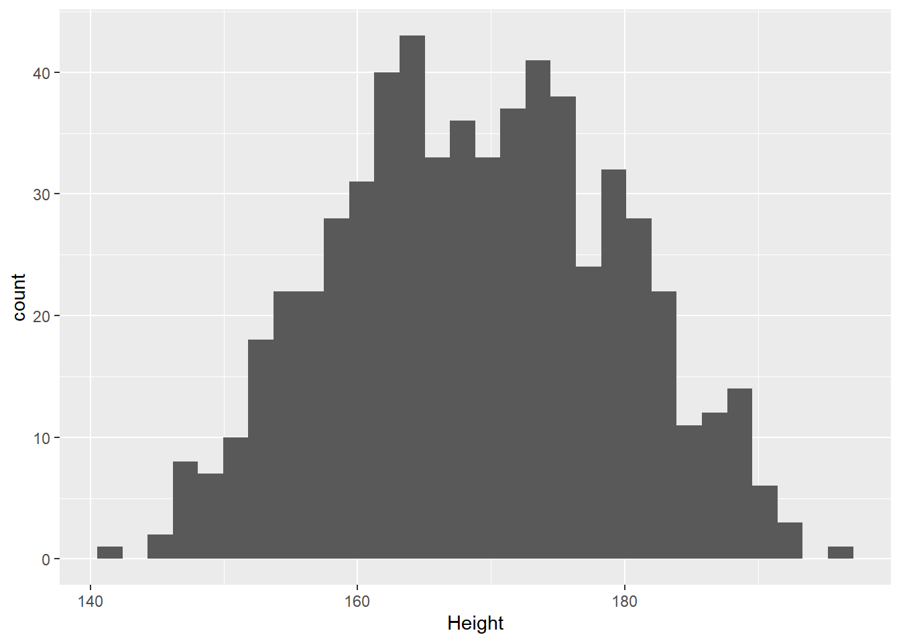
We can do several things to clean this up.
- We’ll change the color of the lines for each bar of the histogram.
- We’ll change the fill inside each bar to make them stand out a bit more.
- We’ll add a title and relabel the horizontal (x) axis to include the units of measurement.
- We’ll avoid the warning by selecting a number of bins (we’ll use 25 here) into which we’ll group the heights before drawing the histogram.
ggplot(data = nh_dat3, aes(x = Height)) +
geom_histogram(bins = 25, col = "yellow", fill = "blue") +
labs(title = "Height of NHANES subjects ages 21-79",
x = "Height in cm.")
3.6.1 Changing a Histogram’s Fill and Color
The CWRU color guide (https://case.edu/umc/our-brand/visual-guidelines/) lists the HTML color schemes for CWRU blue and CWRU gray. Let’s match that color scheme.
cwru.blue <- '#0a304e'
cwru.gray <- '#626262'
ggplot(data = nh_dat3, aes(x = Height)) +
geom_histogram(binwidth = 2, col = cwru.gray, fill = cwru.blue) +
labs(title = "Height of NHANES subjects ages 21-79",
x = "Height in cm.") +
theme_bw()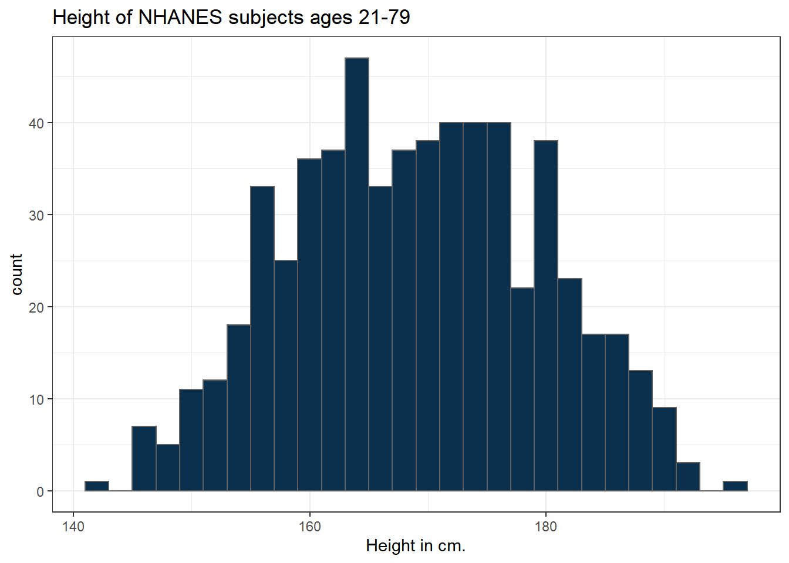
Note the other changes to the graph above.
- We changed the theme to replace the gray background.
- We changed the bins for the histogram, to gather observations into groups of 2 cm. each.
3.7 Height and Sex
ggplot(data = nh_dat3, aes(x = Sex, y = Height, color = Sex)) +
geom_point() +
labs(title = "Height by Sex for NHANES subjects ages 21-79",
y = "Height in cm.")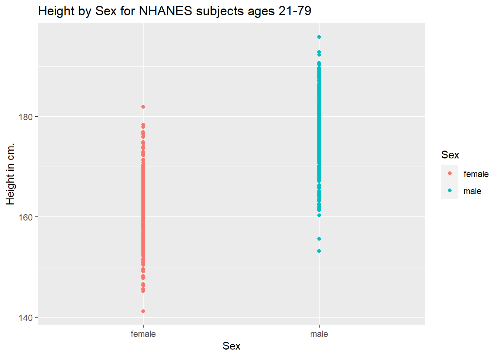
This plot isn’t so useful. We can improve things a little by jittering the points horizontally, so that the overlap is reduced.
ggplot(data = nh_dat3, aes(x = Sex, y = Height, color = Sex)) +
geom_jitter(width = 0.2) +
labs(title = "Height by Sex (jittered) for NHANES subjects ages 21-79",
y = "Height in cm.")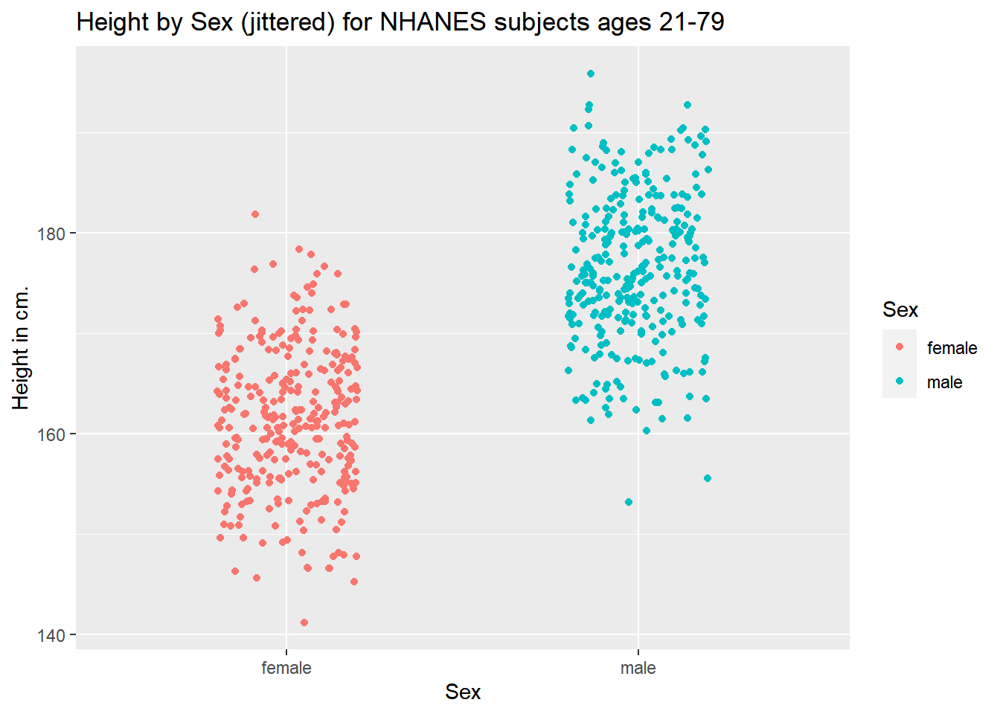
Perhaps it might be better to summarise the distribution in a different way. We might consider a boxplot of the data.
3.7.1 A Boxplot of Height by Sex
ggplot(data = nh_dat3, aes(x = Sex, y = Height, fill = Sex)) +
geom_boxplot() +
labs(title = "Boxplot of Height by Sex for NHANES subjects ages 21-79",
y = "Height in cm.")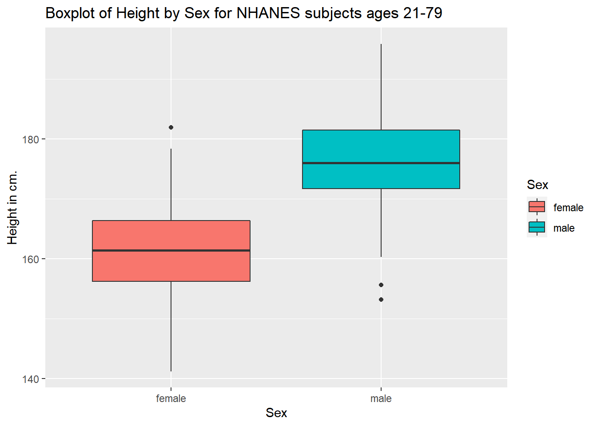
Or perhaps we’d like to see a pair of histograms?
3.7.2 Histograms of Height by Sex
ggplot(data = nh_dat3, aes(x = Height, fill = Sex)) +
geom_histogram(color = "white", bins = 20) +
labs(title = "Histogram of Height by Sex for NHANES subjects ages 21-79",
x = "Height in cm.") +
facet_wrap(~ Sex)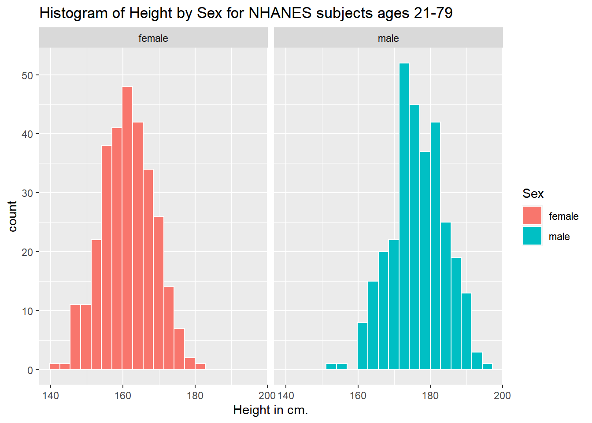
Can we redraw these histograms so that they are a little more comparable, and to get rid of the unnecessary legend?
ggplot(data = nh_dat3, aes(x = Height, fill = Sex)) +
geom_histogram(color = "white", bins = 20) +
labs(title = "Histogram of Height by Sex for NHANES subjects ages 21-79 (Revised)",
x = "Height in cm.") +
guides(fill = FALSE) +
facet_grid(Sex ~ .)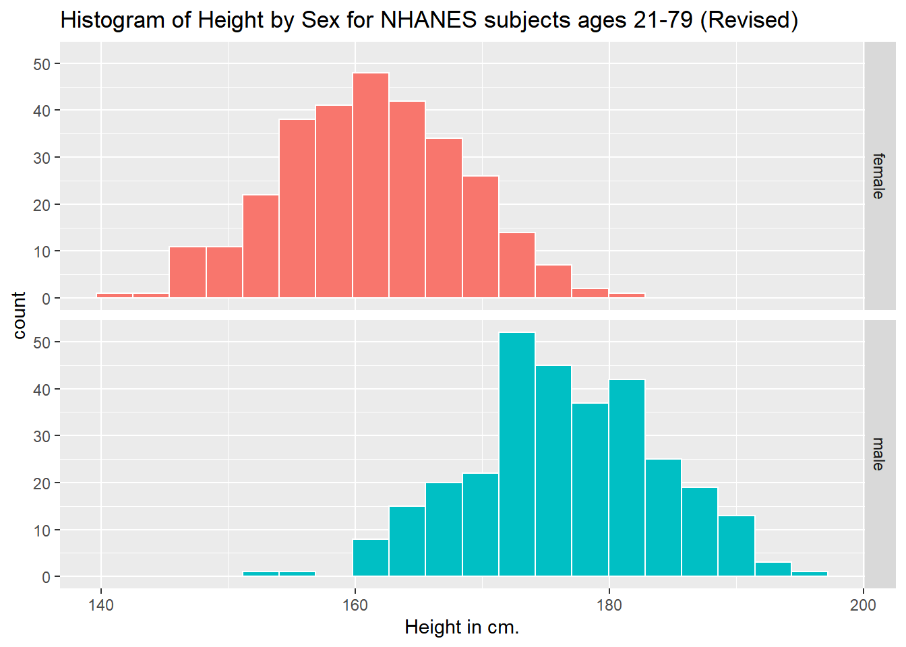
3.8 Looking at Pulse Rate
Let’s look at a different outcome, the pulse rate for our subjects.
Here’s a histogram, again with CWRU colors, for the pulse rates in our sample.
ggplot(data = nh_dat3, aes(x = Pulse)) +
geom_histogram(binwidth = 1, fill = cwru.blue, col = cwru.gray) +
labs(title = "Histogram of Pulse Rate: NHANES subjects ages 21-79",
x = "Pulse Rate (beats per minute)")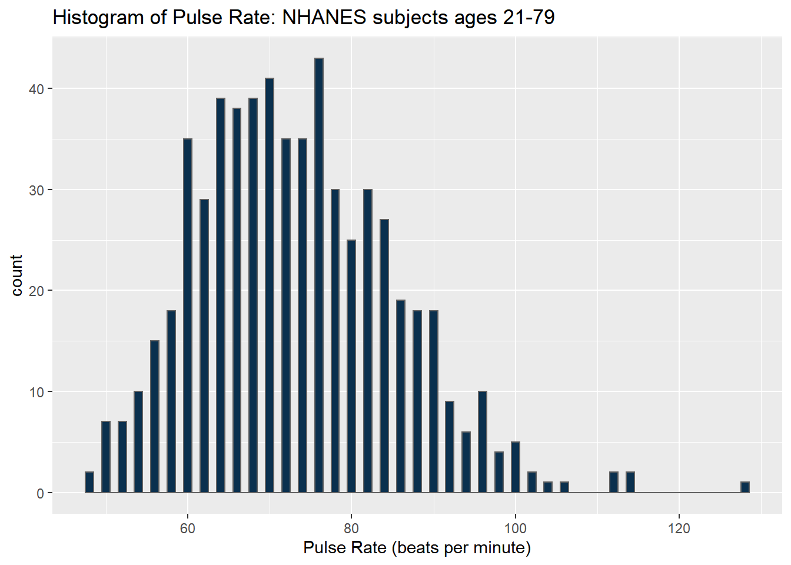
Suppose we instead bin up groups of 5 beats per minute together as we plot the Pulse rates.
ggplot(data = nh_dat3, aes(x = Pulse)) +
geom_histogram(binwidth = 5, fill = cwru.blue, col = cwru.gray) +
labs(title = "Histogram of Pulse Rate: NHANES subjects ages 21-79",
x = "Pulse Rate (beats per minute)")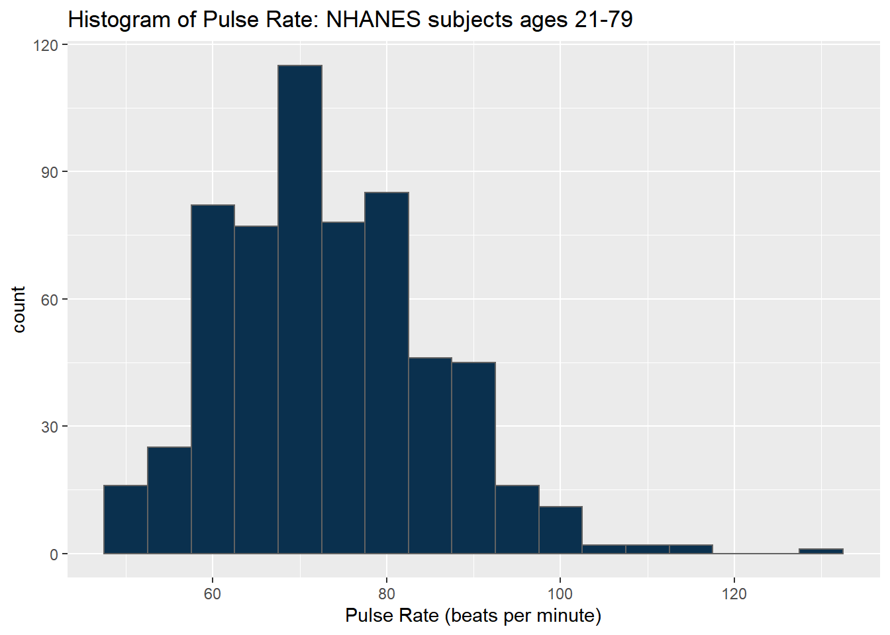
Which is the more useful representation will depend a lot on what questions you’re trying to answer.
3.8.1 Pulse Rate and Physical Activity
We can also split up our data into groups based on whether the subjects are physically active. Let’s try a boxplot.
ggplot(data = nh_dat3, aes(y = Pulse, x = PhysActive, fill = PhysActive)) +
geom_boxplot() +
labs(title = "Pulse Rate by Physical Activity Status for NHANES ages 21-79")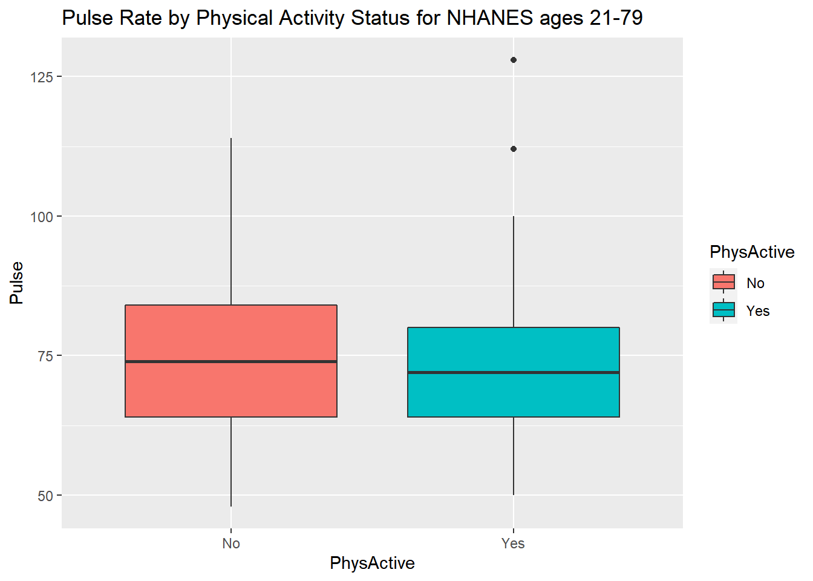
As an accompanying numerical summary, we might ask how many people fall into each of these PhysActive categories, and what is their “average” Pulse rate.
nh_dat3 %>%
group_by(PhysActive) %>%
summarise(count = n(), mean(Pulse), median(Pulse)) %>%
knitr::kable(digits = 2) `summarise()` ungrouping output (override with `.groups` argument)| PhysActive | count | mean(Pulse) | median(Pulse) |
|---|---|---|---|
| No | 293 | 74.21 | 74 |
| Yes | 310 | 72.37 | 72 |
The knitr::kable(digits = 2) piece of this command tells R Markdown to generate a table with some attractive formatting, and rounding any decimals to two figures.
3.8.2 Pulse by Sleeping Trouble
ggplot(data = nh_dat3, aes(x = Pulse, fill = SleepTrouble)) +
geom_histogram(color = "white", bins = 20) +
labs(title = "Histogram of Pulse Rate by Sleep Trouble for NHANES subjects ages 21-79",
x = "Pulse Rate (beats per minute)") +
guides(fill = FALSE) +
facet_grid(SleepTrouble ~ ., labeller = "label_both")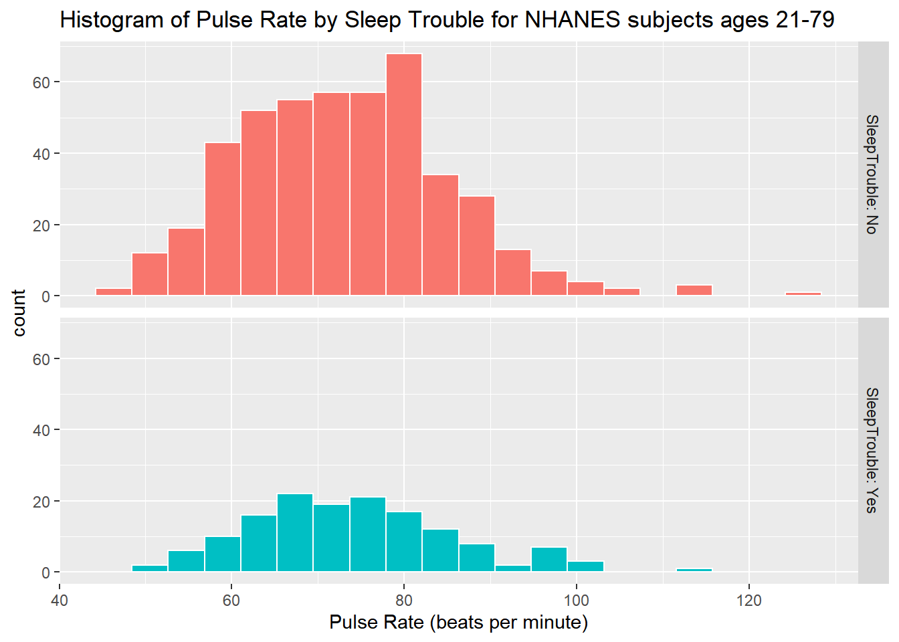
How many people fall into each of these SleepTrouble categories, and what is their “average” Pulse rate?
nh_dat3 %>%
group_by(SleepTrouble) %>%
summarise(count = n(), mean(Pulse), median(Pulse)) %>%
knitr::kable(digits = 2) `summarise()` ungrouping output (override with `.groups` argument)| SleepTrouble | count | mean(Pulse) | median(Pulse) |
|---|---|---|---|
| No | 457 | 73.05 | 72 |
| Yes | 146 | 73.96 | 72 |
3.8.3 Pulse and HealthGen
We can compare the distribution of Pulse rate across groups by the subject’s self-reported overall health (HealthGen), as well.
ggplot(data = nh_dat3, aes(x = HealthGen, y = Pulse, fill = HealthGen)) +
geom_boxplot() +
labs(title = "Pulse by Self-Reported Overall Health for NHANES ages 21-79",
x = "Self-Reported Overall Health", y = "Pulse Rate") +
guides(fill = FALSE) 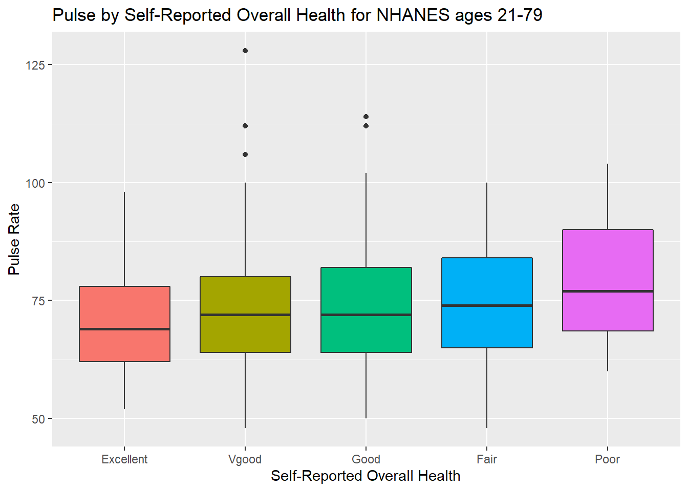
How many people fall into each of these HealthGen categories, and what is their “average” Pulse rate?
nh_dat3 %>%
group_by(HealthGen) %>%
summarise(count = n(), mean(Pulse), median(Pulse)) %>%
knitr::kable(digits = 2) `summarise()` ungrouping output (override with `.groups` argument)| HealthGen | count | mean(Pulse) | median(Pulse) |
|---|---|---|---|
| Excellent | 64 | 69.97 | 69 |
| Vgood | 196 | 72.81 | 72 |
| Good | 238 | 73.66 | 72 |
| Fair | 83 | 74.22 | 74 |
| Poor | 22 | 79.09 | 77 |
3.8.4 Pulse Rate and Systolic Blood Pressure
ggplot(data = nh_dat3, aes(x = SBP, y = Pulse)) +
geom_point() +
geom_smooth(method = "loess") +
labs(title = "Pulse Rate vs. SBP for NHANES subjects, ages 21-79")`geom_smooth()` using formula 'y ~ x'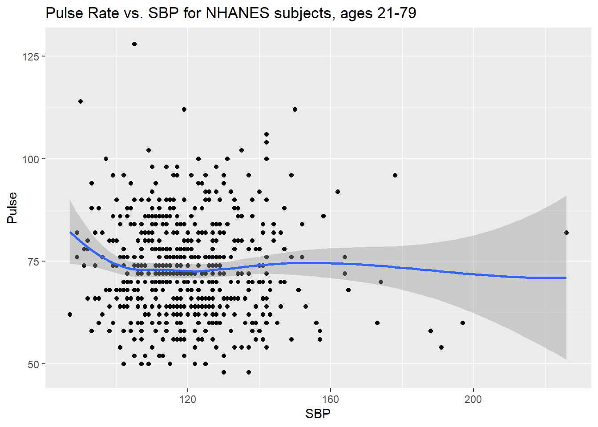
3.8.5 Sleep Trouble vs. No Sleep Trouble?
Could we see whether subjects who have described SleepTrouble show different SBP-pulse rate patterns than the subjects who haven’t?
- Let’s try doing this by changing the shape and the color of the points based on
SleepTrouble.
ggplot(data = nh_dat3,
aes(x = SBP, y = Pulse,
color = SleepTrouble, shape = SleepTrouble)) +
geom_point() +
geom_smooth(method = "loess") +
labs(title = "Pulse Rate vs. SBP for NHANES subjects, ages 21-79")`geom_smooth()` using formula 'y ~ x'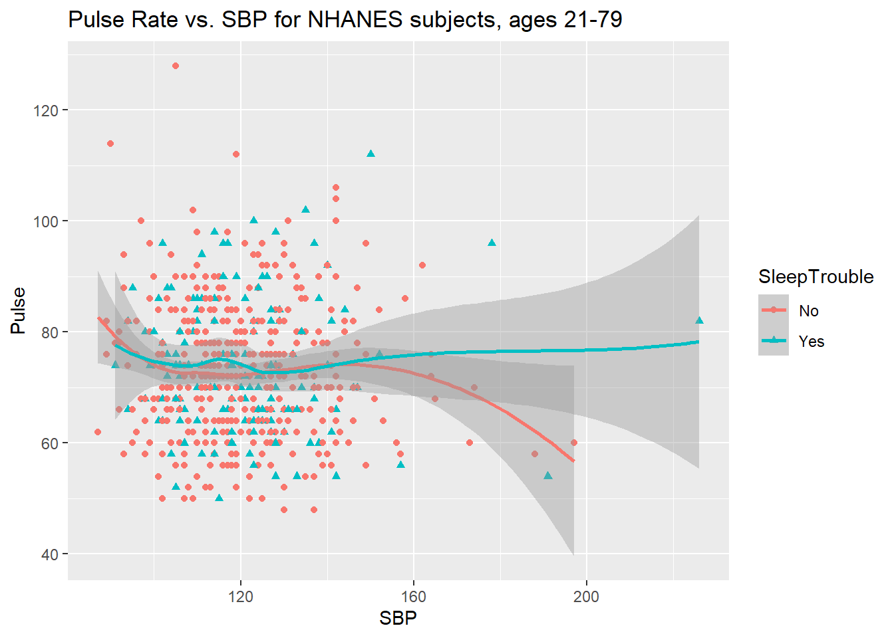
This plot might be easier to interpret if we faceted by SleepTrouble, as well.
ggplot(data = nh_dat3,
aes(x = SBP, y = Pulse,
color = SleepTrouble, shape = SleepTrouble)) +
geom_point() +
geom_smooth(method = "loess") +
labs(title = "Pulse Rate vs. SBP for NHANES subjects, ages 21-79") +
facet_wrap(~ SleepTrouble, labeller = "label_both")`geom_smooth()` using formula 'y ~ x'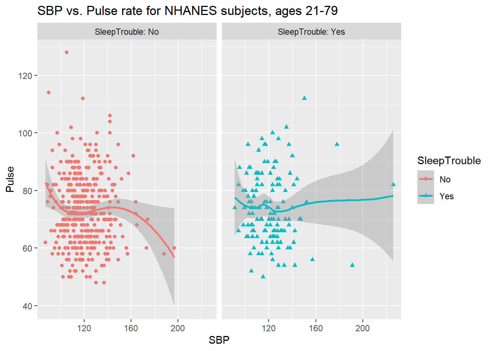
3.9 General Health Status
Here’s a Table of the General Health Status results. Again, this is a self-reported rating of each subject’s health on a five point scale (Excellent, Very Good, Good, Fair, Poor.)
.
Excellent Vgood Good Fair Poor
64 196 238 83 22 The HealthGen data are categorical, which means that summarizing them with averages isn’t as appealing as looking at percentages, proportions and rates.
Another, somewhat simpler way to get a table of this sort of information uses the tabyl function from the janitor package in R.
# tabyl is part of the janitor package
# already loaded: library(janitor)
nh_dat3 %>%
tabyl(HealthGen) HealthGen n percent
Excellent 64 0.10613599
Vgood 196 0.32504146
Good 238 0.39469320
Fair 83 0.13764511
Poor 22 0.03648425I don’t actually like the title of percent here, as it’s really a proportion, but that can be adjusted, and we can add a total.
HealthGen n percent
Excellent 64 10.6%
Vgood 196 32.5%
Good 238 39.5%
Fair 83 13.8%
Poor 22 3.6%
Total 603 100.0%When working with an unordered categorical variable, like MaritalStatus, the same approach can work.
MaritalStatus n percent
Divorced 61 10.1%
LivePartner 43 7.1%
Married 349 57.9%
NeverMarried 104 17.2%
Separated 8 1.3%
Widowed 38 6.3%
Total 603 100.0%3.9.1 Bar Chart for Categorical Data
Usually, a bar chart is the best choice for a graphing a variable made up of categories.
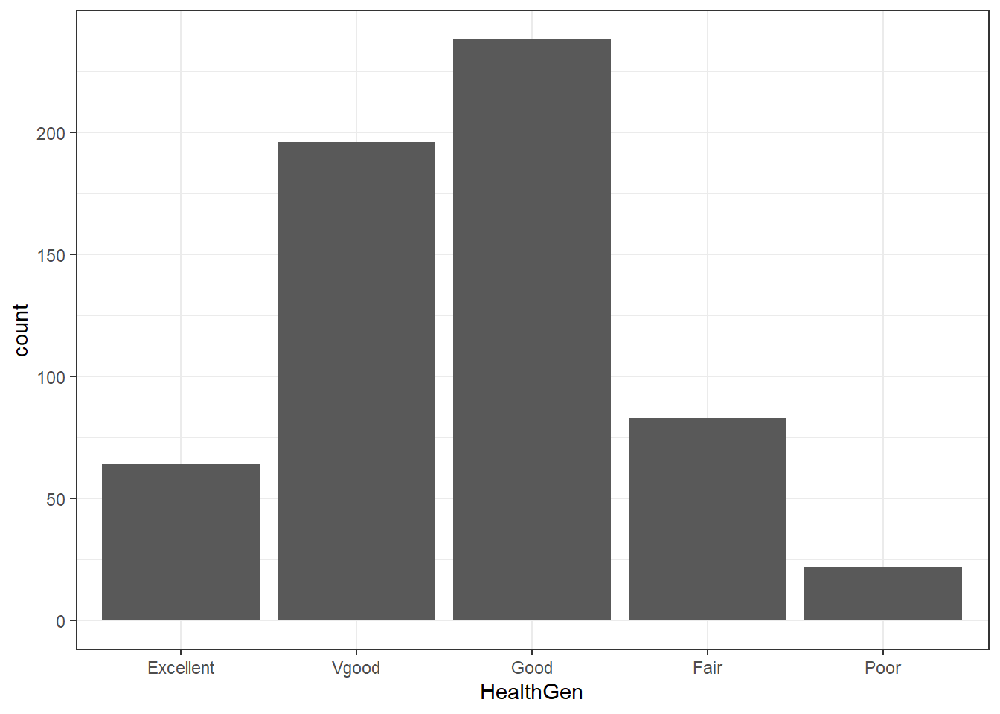
There are lots of things we can do to make this plot fancier.
ggplot(data = nh_dat3, aes(x = HealthGen, fill = HealthGen)) +
geom_bar() +
guides(fill = FALSE) +
labs(x = "Self-Reported Health Status",
y = "Number of NHANES subjects",
title = "Self-Reported Health Status in NHANES subjects ages 21-79")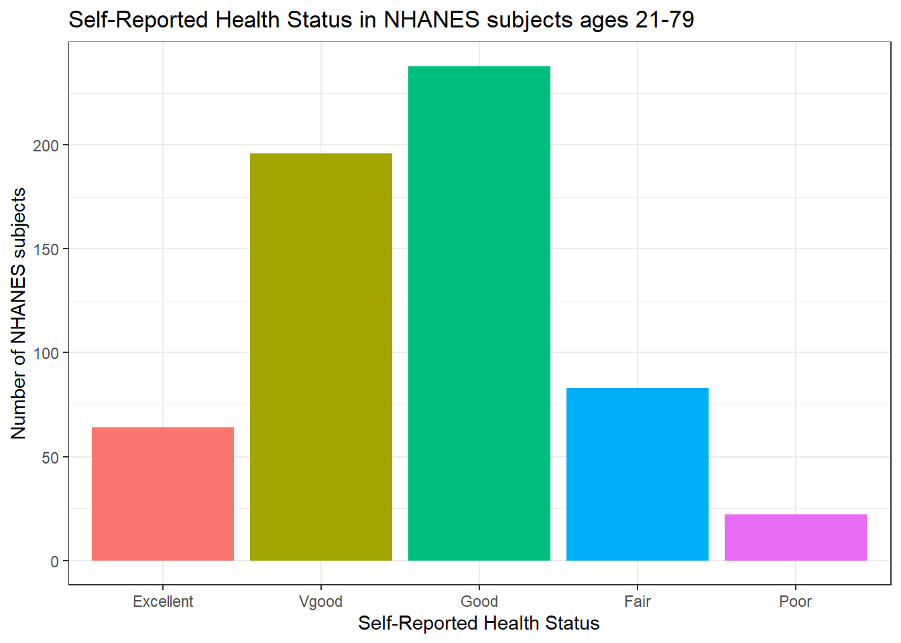
Or, we can really go crazy…
nh_dat3 %>%
count(HealthGen) %>%
mutate(pct = round(prop.table(n) * 100, 1)) %>%
ggplot(aes(x = HealthGen, y = pct, fill = HealthGen)) +
geom_bar(stat = "identity", position = "dodge") +
scale_fill_viridis_d() +
guides(fill = FALSE) +
geom_text(aes(y = pct + 1, # nudge above top of bar
label = paste0(pct, '%')), # prettify
position = position_dodge(width = .9),
size = 4) +
labs(x = "Self-Reported Health Status",
y = "Percentage of NHANES subjects",
title = "Self-Reported Health Status in NHANES subjects ages 21-79") +
theme_bw()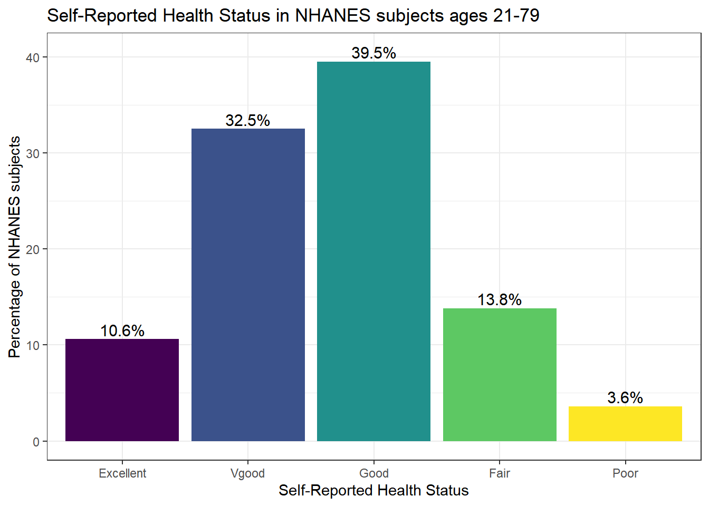
3.9.2 Working with Tables
We can add both row and column marginal totals, and compare subjects by Sex, as follows…
Sex Excellent Vgood Good Fair Poor Total
female 27 96 121 41 14 299
male 37 100 117 42 8 304
Total 64 196 238 83 22 603If we like, we can make this look a little more polished with the knitr::kable function…
| Sex | Excellent | Vgood | Good | Fair | Poor | Total |
|---|---|---|---|---|---|---|
| female | 27 | 96 | 121 | 41 | 14 | 299 |
| male | 37 | 100 | 117 | 42 | 8 | 304 |
| Total | 64 | 196 | 238 | 83 | 22 | 603 |
Or, we can get a complete cross-tabulation, including (in this case) the percentages of people within each Sex that fall in each HealthGen category (percentages within each row) like this.
nh_dat3 %>%
tabyl(Sex, HealthGen) %>%
adorn_totals("row") %>%
adorn_percentages("row") %>%
adorn_pct_formatting() %>%
adorn_ns() %>%
knitr::kable()| Sex | Excellent | Vgood | Good | Fair | Poor |
|---|---|---|---|---|---|
| female | 9.0% (27) | 32.1% (96) | 40.5% (121) | 13.7% (41) | 4.7% (14) |
| male | 12.2% (37) | 32.9% (100) | 38.5% (117) | 13.8% (42) | 2.6% (8) |
| Total | 10.6% (64) | 32.5% (196) | 39.5% (238) | 13.8% (83) | 3.6% (22) |
And, if we wanted the column percentages, to determine which sex had the higher rate of each HealthGen status level, we can get that by changing the adorn_percentages to describe results at the column level:
nh_dat3 %>%
tabyl(Sex, HealthGen) %>%
adorn_totals("col") %>%
adorn_percentages("col") %>%
adorn_pct_formatting() %>%
adorn_ns() %>%
knitr::kable()| Sex | Excellent | Vgood | Good | Fair | Poor | Total |
|---|---|---|---|---|---|---|
| female | 42.2% (27) | 49.0% (96) | 50.8% (121) | 49.4% (41) | 63.6% (14) | 49.6% (299) |
| male | 57.8% (37) | 51.0% (100) | 49.2% (117) | 50.6% (42) | 36.4% (8) | 50.4% (304) |
3.9.3 SBP by General Health Status
Let’s consider now the relationship between self-reported overall health and systolic blood pressure.
ggplot(data = nh_dat3, aes(x = HealthGen, y = SBP, fill = HealthGen)) +
geom_boxplot() +
labs(title = "SBP by Health Status, Overall Health for NHANES ages 21-79",
y = "Systolic Blood Pressure", x = "Self-Reported Overall Health") +
guides(fill = FALSE) 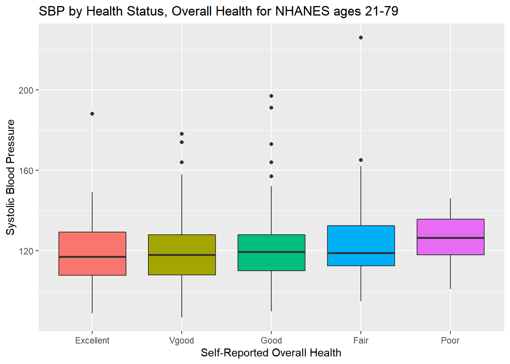
We can see that not too many people self-identify with the “Poor” health category.
nh_dat3 %>%
group_by(HealthGen) %>%
summarise(count = n(), mean(SBP), median(SBP)) %>%
knitr::kable() `summarise()` ungrouping output (override with `.groups` argument)| HealthGen | count | mean(SBP) | median(SBP) |
|---|---|---|---|
| Excellent | 64 | 119.1562 | 117.0 |
| Vgood | 196 | 119.0714 | 118.0 |
| Good | 238 | 120.4244 | 119.5 |
| Fair | 83 | 123.9398 | 119.0 |
| Poor | 22 | 125.8636 | 126.5 |
3.9.4 SBP by Physical Activity and General Health Status
We’ll build a panel of boxplots to try to understand the relationships between Systolic Blood Pressure, General Health Status and Physical Activity. Note the use of coord_flip to rotate the graph 90 degrees, and the use of labeller within facet_wrap to include both the name of the (Physical Activity) variable and its value.
ggplot(data = nh_dat3, aes(x = HealthGen, y = SBP, fill = HealthGen)) +
geom_boxplot() +
labs(title = "SBP by Health Status, Overall Health for NHANES ages 21-79",
y = "Systolic BP", x = "Self-Reported Overall Health") +
guides(fill = FALSE) +
facet_wrap(~ PhysActive, labeller = "label_both") +
coord_flip()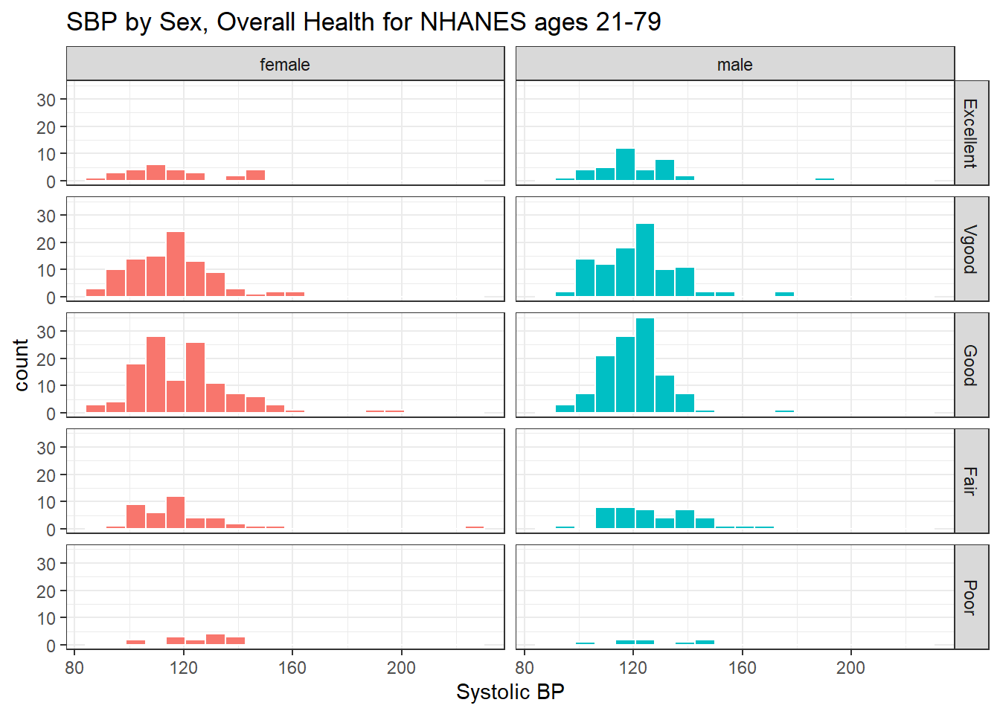
3.9.5 SBP by Sleep Trouble and General Health Status
Here’s a plot of faceted histograms, which might be used to address similar questions related to the relationship between Overall Health, Systolic Blood Pressure and Sex.
3.10 Conclusions
This is just a small piece of the toolbox for visualizations that we’ll create in this class. Many additional tools are on the way, but the main idea won’t change. Using the ggplot2 package, we can accomplish several critical tasks in creating a visualization, including:
- Identifying (and labeling) the axes and titles
- Identifying a type of
geomto use, like a point, bar or histogram - Changing fill, color, shape, size to facilitate comparisons
- Building “small multiples” of plots with faceting
Good data visualizations make it easy to see the data, and ggplot2’s tools make it relatively difficult to make a really bad graph.
References
Baumer, Benjamin S., Daniel T. Kaplan, and Nicholas J. Horton. 2017. Modern Data Science with R. Boca Raton, FL: CRC Press. https://mdsr-book.github.io/.
Grolemund, Garrett, and Hadley Wickham. 2019. R for Data Science. O’Reilly. http://r4ds.had.co.nz/.